Overview
Single-cell RNA sequencing (scRNA-seq) simulation algorithms generate synthetic expression counts to evaluate computational pipelines, cluster detection, and differential expression methods. Quantifying whether synthetic data accurately captures the complex statistical distributions, cell-type manifolds, batch variations, and biological trajectories of real experimental data is critical.
This tutorial provides a step-by-step demonstration of evaluating
synthetic scRNA-seq datasets using
scSimEval. We benchmark 6
state-of-the-art single-cell simulators against an empirical
biological reference from rice bud tissue (Oryza sativa).
1. Dataset Preparation & Experimental Design
1.1 Empirical Reference & Simulation Suites
We evaluate an empirical biological reference and 6 simulated datasets derived from rice bud tissue:
- Reference Dataset: Rice bud tissue (Oryza sativa) containing 1,558 genes across 2,589 single cells, with 8 annotated cell types and 2 technical batches.
-
Simulated Datasets: Six simulators configured for
the same biological system:
scMultiSimscDesign3MOSimscCrossscMoMtFMatilda
While multiomics Seurat objects may contain multiple modalities
(e.g., scRNA and scATAC), scSimEval cleanly isolates the
RNA counts assay and preserves cell-level metadata (cell
types and batch annotations).
1.2 Computational Scalability Measures
Empirical simulation runtime (wall-clock seconds) and peak RAM consumption were tracked under a standardized 16-core allocation:
| Simulation Method | Wall-Clock Runtime (s) | Peak Memory | Memory Unit | CPU Cores |
|---|---|---|---|---|
| scMultiSim | 191.89 | 1139.00 | MiB | 16 |
| scDesign3 | 87.87 | 5713.90 | MiB | 16 |
| MOSim | 294.45 | 1399.50 | MiB | 16 |
| scCross | 867.68 | 1322.84 | MB | 16 |
| scMoMtF | 13.84 | 339.69 | MB | 16 |
| Matilda | 57.32 | 352.26 | MB | 16 |
2. Loading Libraries & Data Objects
First, we load scSimEval, Seurat, and
Matrix:
2.1 Safe scRNA-seq Data Loader
We define a data loader to extract the RNA count matrix and standardize metadata annotations:
load_scrna_seurat <- function(path, placeholder = "dataset") {
raw_obj <- readRDS(path)
# Extract RNA counts layer safely
counts_rna <- NULL
if ("RNA" %in% names(raw_obj@assays)) {
counts_rna <- tryCatch(raw_obj[["RNA"]]$counts, error = function(e) NULL)
if (is.null(counts_rna)) {
counts_rna <- tryCatch(
Seurat::GetAssayData(raw_obj[["RNA"]], layer = "counts"),
error = function(e) Seurat::GetAssayData(raw_obj[["RNA"]], slot = "counts")
)
}
} else {
def_a <- Seurat::DefaultAssay(raw_obj)
counts_rna <- tryCatch(
Seurat::GetAssayData(raw_obj[[def_a]], layer = "counts"),
error = function(e) Seurat::GetAssayData(raw_obj[[def_a]], slot = "counts")
)
}
# Create a pure single-cell RNA Seurat object
clean_obj <- CreateSeuratObject(counts = counts_rna, meta.data = raw_obj@meta.data)
# Validate structure using scSimEval
val <- validate_sc_object(clean_obj, modality = "scRNA-seq")
# Standardize cell type nomenclature
ct <- val$cell_types
if (!is.null(ct)) ct <- sub("^Bud--", "", ct)
list(
counts = val$counts,
object = val$object,
cell_types = ct,
batch_info = val$batch_info
)
}2.2 Loading Reference & Extracting Summary
# Load empirical reference
ref_file <- "/root/seurat_files/reference_datasets/rice/rice_processed_Bud_final.rds"
ref_data <- load_scrna_seurat(ref_file, placeholder = "Reference (Rice_Bud)")
ref_mat <- ref_data$counts
ref_obj <- ref_data$object
ct_ref <- ref_data$cell_types
bt_ref <- ref_data$batch_info
cat(sprintf("Reference: %d features x %d cells across %d cell types and %d batches.\n",
nrow(ref_mat), ncol(ref_mat), length(unique(ct_ref)), length(unique(bt_ref))))#> Reference: 1558 features x 2589 cells across 8 cell types and 2 batches.We extract baseline empirical summaries using
extract_dataset_summary():
all_dataset_summaries <- list()
all_dataset_summaries[[1]] <- extract_dataset_summary(
ref_mat,
role = "Biological Reference",
method_name = "Empirical Reference (Rice_Bud)",
modality = "scRNA-seq",
cell_types = ct_ref,
batch_info = bt_ref
)3. Live Simulation Accuracy Evaluation
We configure the six simulation methods with their scalability values
and execute evaluate_simulation_accuracy() using 16
CPU cores:
sim_configs <- list(
scMultiSim = list(
name = "scMultiSim",
file = "/root/seurat_files/simulated_datasets/rice/scMultiSim/scMultiSim_rice_Bud_seurat.rds",
time = 191.89, time_unit = "seconds", mem = 1139.00, mem_unit = "MiB", cores = 16L
),
scDesign3 = list(
name = "scDesign3",
file = "/root/seurat_files/simulated_datasets/rice/scDesign3/scDesign3_rice_Bud_seurat.rds",
time = 87.87, time_unit = "seconds", mem = 5713.90, mem_unit = "MiB", cores = 16L
),
MOSim = list(
name = "MOSim",
file = "/root/seurat_files/simulated_datasets/rice/MOSim/mosim_rice_Bud_seurat.rds",
time = 294.45, time_unit = "seconds", mem = 1399.50, mem_unit = "MiB", cores = 16L
),
scCross = list(
name = "scCross",
file = "/root/seurat_files/simulated_datasets/rice/scCross/scCross_rice_Bud_seurat.rds",
time = 867.68, time_unit = "seconds", mem = 1322.84, mem_unit = "MB", cores = 16L
),
scMoMtF = list(
name = "scMoMtF",
file = "/root/seurat_files/simulated_datasets/rice/scMoMtF/scMoMtF_rice_Bud_seurat.rds",
time = 13.84, time_unit = "seconds", mem = 339.69, mem_unit = "MB", cores = 16L
),
Matilda = list(
name = "Matilda",
file = "/root/seurat_files/simulated_datasets/rice/Matilda/matilda_rice_Bud_seurat.rds",
time = 57.32, time_unit = "seconds", mem = 352.26, mem_unit = "MB", cores = 16L
)
)3.1 Executing the Benchmarking Loop
all_benchmark_results <- list()
all_sim_counts <- list()
for (cfg in sim_configs) {
cat("[scSimEval] Evaluating:", cfg$name, "...\n")
sim_data <- load_scrna_seurat(cfg$file, placeholder = cfg$name)
all_sim_counts[[cfg$name]] <- sim_data$counts
# Dataset summary
all_dataset_summaries[[length(all_dataset_summaries) + 1]] <- extract_dataset_summary(
sim_data$counts, role = "Simulated",
method_name = paste0(cfg$name, " (Rice_Bud)"),
modality = "scRNA-seq", cell_types = sim_data$cell_types, batch_info = sim_data$batch_info
)
# Master evaluation pipeline across 7 relevant unimodal categories
eval_res <- evaluate_simulation_accuracy(
ref_data = ref_obj,
sim_data = sim_data$object,
cell_types_ref = ct_ref,
cell_types_sim = sim_data$cell_types,
batch_ref = bt_ref,
batch_sim = sim_data$batch_info,
modality = "scRNA-seq",
memory_mb = cfg$mem,
elapsed_time = cfg$time,
time_unit = cfg$time_unit,
memory_unit = cfg$mem_unit,
sim_cores = cfg$cores,
compute_bivariate = FALSE,
threads = 16,
verbose = FALSE
)
tbl <- eval_res$metrics_summary_table
tbl$Method <- cfg$name
tbl$Dataset <- "Rice_Bud"
if (!"Score" %in% colnames(tbl) && "Value" %in% colnames(tbl)) tbl$Score <- tbl$Value
all_benchmark_results[[cfg$name]] <- standardize_benchmark_categories(tbl)
}
# Consolidate results across all 6 methods
final_benchmark_df <- do.call(rbind, all_benchmark_results)
final_benchmark_df <- standardize_benchmark_categories(final_benchmark_df)
final_summary_df <- do.call(rbind, all_dataset_summaries)#> [scSimEval] Consolidating results across methods...
#> Total evaluated metric entries: 1020 across 6 simulation methods.4. Exploring Benchmark Results Across Categories
The resulting metrics_summary_table aggregates
quantitative scores across all evaluation categories. Below we inspect
the top entries of each category:
4.1 Category I: Global & Marginal Distributions
Assesses univariate goodness-of-fit across library size, feature means, and feature variances:
head(subset(final_benchmark_df, grepl("Distributional", Category))[, c("Method", "Property", "Metric", "Value", "Score")], 5)
#> Method Property Metric Value
#> scMultiSim_Rice_Bud.1 scMultiSim library_size Wasserstein 568.22325222
#> scMultiSim_Rice_Bud.2 scMultiSim library_size KS 0.93182696
#> scMultiSim_Rice_Bud.3 scMultiSim library_size MAD 560.00000000
#> scMultiSim_Rice_Bud.4 scMultiSim library_size Bhattacharyya 0.03318678
#> scMultiSim_Rice_Bud.5 scMultiSim library_size Runs_Statistic -64.23783074
#> Score
#> scMultiSim_Rice_Bud.1 568.22325222
#> scMultiSim_Rice_Bud.2 0.93182696
#> scMultiSim_Rice_Bud.3 560.00000000
#> scMultiSim_Rice_Bud.4 0.03318678
#> scMultiSim_Rice_Bud.5 -64.237830744.2 Category II: Sparsity & Zero-Inflation Dynamics
Quantifies dropout curve concordance, slope discrepancies, and logistic zero-probability dynamics:
head(subset(final_benchmark_df, grepl("Sparsity", Category))[, c("Method", "Property", "Metric", "Value", "Score")], 5)
#> Method Property
#> scMultiSim_Rice_Bud.141 scMultiSim dropout_curve
#> scMultiSim_Rice_Bud.142 scMultiSim dropout_curve
#> scMultiSim_Rice_Bud.143 scMultiSim dropout_curve
#> scMultiSim_Rice_Bud.144 scMultiSim excess_zero_weights
#> scDesign3_Rice_Bud.141 scDesign3 dropout_curve
#> Metric Value Score
#> scMultiSim_Rice_Bud.141 slope_error 0.09196064 0.09196064
#> scMultiSim_Rice_Bud.142 midpoint_error 0.74999276 0.74999276
#> scMultiSim_Rice_Bud.143 r2_discrepancy 0.11003824 0.11003824
#> scMultiSim_Rice_Bud.144 excess_zero_weight_discrepancy 0.19099177 0.19099177
#> scDesign3_Rice_Bud.141 slope_error 0.07187202 0.071872024.3 Category III: Cellular Manifold & Clustering Concordance
Measures Maximum Mean Discrepancy (MMD), generative precision and recall, and cluster boundary preservation:
head(subset(final_benchmark_df, grepl("Manifold", Category))[, c("Method", "Property", "Metric", "Value", "Score")], 5)
#> Method Property Metric Value
#> scMultiSim_Rice_Bud.145 scMultiSim manifold MMD 0.3868724
#> scMultiSim_Rice_Bud.146 scMultiSim manifold Generative_Precision 0.0000000
#> scMultiSim_Rice_Bud.147 scMultiSim manifold Generative_Recall 0.0000000
#> scMultiSim_Rice_Bud.148 scMultiSim clustering silhouette_sim 0.1154894
#> scMultiSim_Rice_Bud.149 scMultiSim clustering cdi 1.5904445
#> Score
#> scMultiSim_Rice_Bud.145 0.3868724
#> scMultiSim_Rice_Bud.146 0.0000000
#> scMultiSim_Rice_Bud.147 0.0000000
#> scMultiSim_Rice_Bud.148 0.1154894
#> scMultiSim_Rice_Bud.149 1.59044454.4 Category IV: Technical Variation & Batch Mixing Dynamics
Evaluates batch silhouette widths, Principal Component Regression (), and Cell-specific Mixing Scores (CMS):
head(subset(final_benchmark_df, grepl("Batch", Category))[, c("Method", "Property", "Metric", "Value", "Score")], 5)
#> Method Property Metric Value
#> scMultiSim_Rice_Bud.153 scMultiSim batch_mixing batch_silhouette 0.15233124
#> scMultiSim_Rice_Bud.154 scMultiSim batch_mixing pcr_r2 0.15880169
#> scMultiSim_Rice_Bud.155 scMultiSim batch_mixing cms 0.00263763
#> scMultiSim_Rice_Bud.156 scMultiSim batch_mixing isi 1.31740248
#> scMultiSim_Rice_Bud.157 scMultiSim batch_mixing cross_batch_F1 0.93336925
#> Score
#> scMultiSim_Rice_Bud.153 0.15233124
#> scMultiSim_Rice_Bud.154 0.15880169
#> scMultiSim_Rice_Bud.155 0.00263763
#> scMultiSim_Rice_Bud.156 1.31740248
#> scMultiSim_Rice_Bud.157 0.933369254.5 Category V: Biological Signal & Differential Expression (DEG) Fidelity
Assesses marker gene identification accuracy, p-value distribution divergence, and effect size conservation:
head(subset(final_benchmark_df, grepl("Differential", Category))[, c("Method", "Property", "Metric", "Value", "Score")], 5)
#> Method Property
#> scMultiSim_Rice_Bud.158 scMultiSim scRNA_differential_expression
#> scMultiSim_Rice_Bud.159 scMultiSim scRNA_differential_expression
#> scMultiSim_Rice_Bud.160 scMultiSim scRNA_differential_expression
#> scMultiSim_Rice_Bud.161 scMultiSim scRNA_differential_expression
#> scMultiSim_Rice_Bud.162 scMultiSim scRNA_differential_expression
#> Metric Value Score
#> scMultiSim_Rice_Bud.158 pval_dist_score 0.8073362 0.8073362
#> scMultiSim_Rice_Bud.159 accuracy 0.8192279 0.8192279
#> scMultiSim_Rice_Bud.160 precision 0.0000000 0.0000000
#> scMultiSim_Rice_Bud.161 recall 0.0000000 0.0000000
#> scMultiSim_Rice_Bud.162 f1_score 0.0000000 0.00000004.6 Category VII: Trajectory & Lineage Topology
Benchmarks milestone graph topology similarity (HIM, edge flip), geodesic distances, branch assignment F1, and Random Forest feature importance correlation:
head(subset(final_benchmark_df, grepl("Trajectory", Category))[, c("Method", "Property", "Metric", "Value", "Score")], 5)
#> Method Property Metric
#> scMultiSim_Rice_Bud.164 scMultiSim trajectory_topology him
#> scMultiSim_Rice_Bud.165 scMultiSim trajectory_topology edge_flip
#> scMultiSim_Rice_Bud.166 scMultiSim geodesic_ordering geodesic_correlation
#> scMultiSim_Rice_Bud.167 scMultiSim branch_concordance F1_branches
#> scMultiSim_Rice_Bud.168 scMultiSim dynamic_features wcor_features
#> Value Score
#> scMultiSim_Rice_Bud.164 0.5953041 0.5953041
#> scMultiSim_Rice_Bud.165 0.4000000 0.4000000
#> scMultiSim_Rice_Bud.166 0.2978557 0.2978557
#> scMultiSim_Rice_Bud.167 0.1528210 0.1528210
#> scMultiSim_Rice_Bud.168 0.5305022 0.53050224.7 Category VIII: Computational Scalability & Efficiency
Quantifies hardware-normalized resource expenditure in cumulative core-seconds and resident peak memory per allocated core:
head(subset(final_benchmark_df, grepl("Scalability", Category))[, c("Method", "Property", "Metric", "Value", "Score")], 6)
#> Method Property Metric
#> scMultiSim_Rice_Bud.169 scMultiSim resource_usage core_seconds
#> scMultiSim_Rice_Bud.170 scMultiSim resource_usage memory_per_core_mib
#> scDesign3_Rice_Bud.169 scDesign3 resource_usage core_seconds
#> scDesign3_Rice_Bud.170 scDesign3 resource_usage memory_per_core_mib
#> MOSim_Rice_Bud.169 MOSim resource_usage core_seconds
#> MOSim_Rice_Bud.170 MOSim resource_usage memory_per_core_mib
#> Value Score
#> scMultiSim_Rice_Bud.169 3070.24000 3070.24000
#> scMultiSim_Rice_Bud.170 71.18750 71.18750
#> scDesign3_Rice_Bud.169 1405.92000 1405.92000
#> scDesign3_Rice_Bud.170 357.11875 357.11875
#> MOSim_Rice_Bud.169 4711.20000 4711.20000
#> MOSim_Rice_Bud.170 87.46875 87.468755. Diagnostic Visualizations
scSimEval includes publication-grade visualization
functions designed for multi-simulator comparative analysis. All figures
below are rendered directly with normalized scores.
5.1 Comparative Bubble Matrix
The comparative bubble matrix visualizes metric scores across all evaluation categories, with circle size and color gradient encoding normalized simulator fidelity:
p_bubble <- plot_benchmark_bubble_matrix(final_benchmark_df, base_size = 12)
ggsave("figures/scSimEval_benchmark_bubble_matrix.png", plot = p_bubble, width = 18, height = 9, dpi = 300)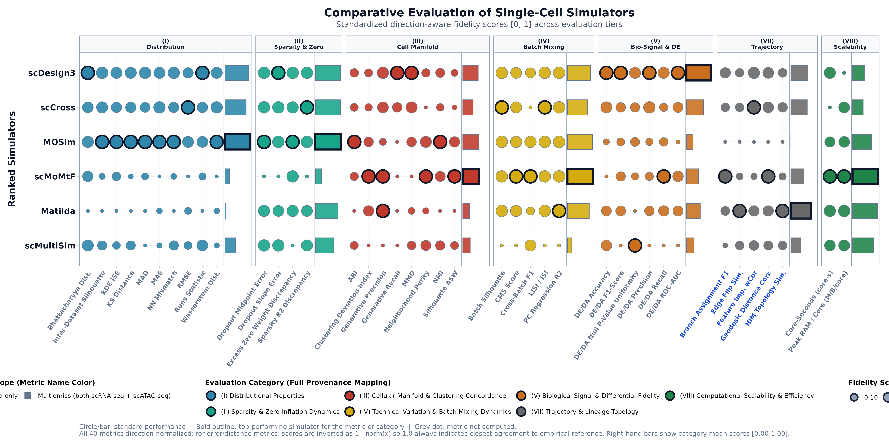
Figure 1: Comparative Bubble Matrix Benchmarking 6 Simulators Across All Evaluation Measures on Rice Bud scRNA-seq.
5.2 Evaluation Summary Visualization
A synthesized radar/polar bar overview summarizing average normalized scores across all categories:
p_summary <- plot_evaluation_summary(final_benchmark_df, normalize_scores = TRUE, base_size = 11)
ggsave("figures/scSimEval_evaluation_summary.png", plot = p_summary, width = 14, height = 7, dpi = 300)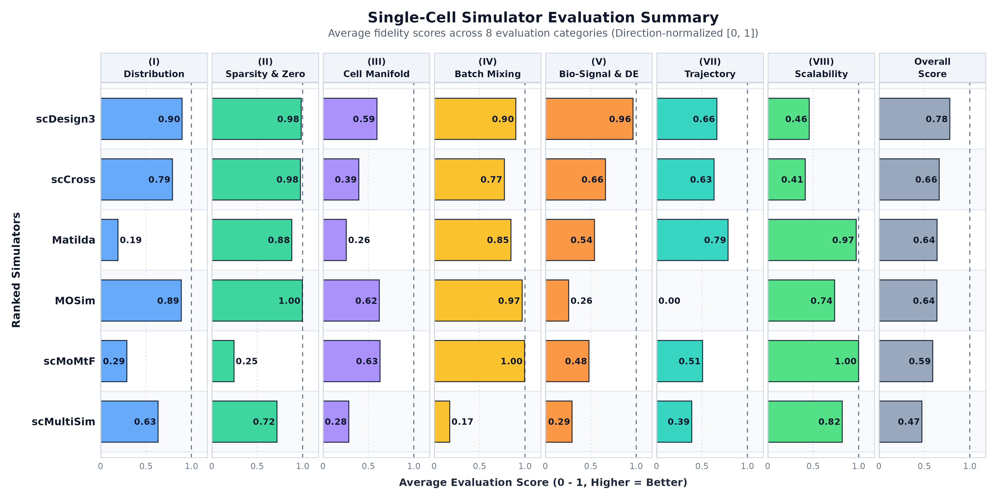
Figure 2: Overall Simulator Evaluation Summary Across Categories.
5.3 Distribution QC: Q-Q Plots and Empirical & Joint Density
Detailed quantile-quantile (Q-Q) and density plots comparing
empirical reference distributions against a selected simulator
(Matilda):
# Q-Q Plots for Library Size, Mean, Variance, and Zero Fractions
p_qc_qq <- plot_distribution_qc(
ref_data = ref_mat,
sim_data = all_sim_counts[["Matilda"]],
layout = "qq",
title = "Distribution QC Q-Q: Reference vs. Matilda"
)
ggsave("figures/scSimEval_distribution_qc_qq.png", plot = p_qc_qq, width = 13, height = 9, dpi = 300)
# Density Plots for Marginal Distributions
p_qc_density <- plot_distribution_qc(
ref_data = ref_mat,
sim_data = all_sim_counts[["Matilda"]],
layout = "density",
title = "Distribution QC Density: Reference vs. Matilda"
)
ggsave("figures/scSimEval_distribution_qc_density.png", plot = p_qc_density, width = 13, height = 9, dpi = 300)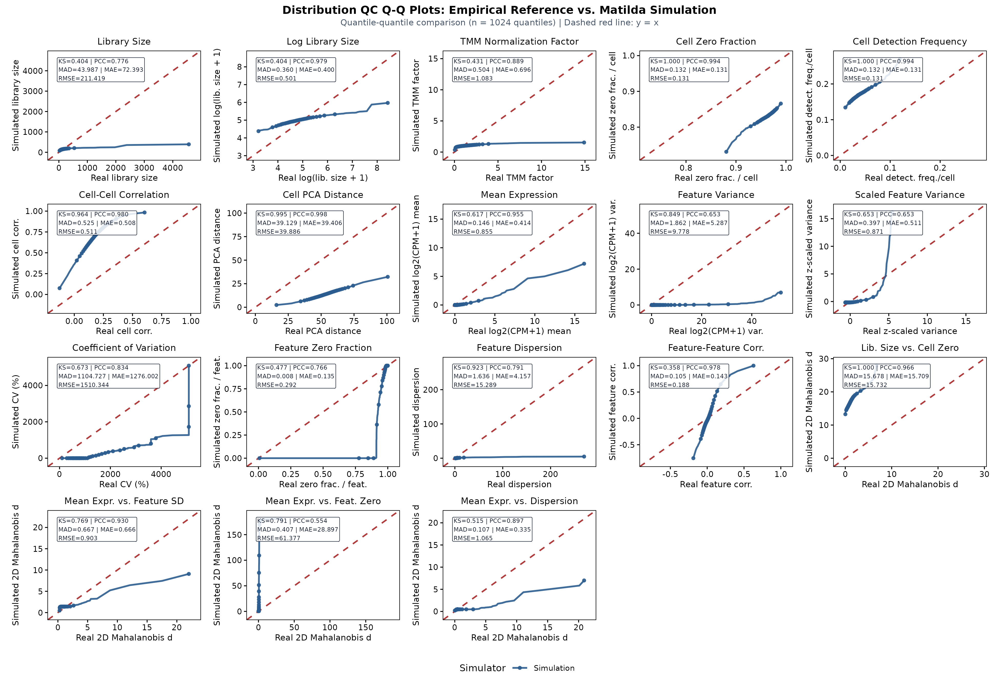
Figure 3A: Distribution QC Quantile-Quantile (Q-Q) Diagnostics (Matilda vs. Reference).
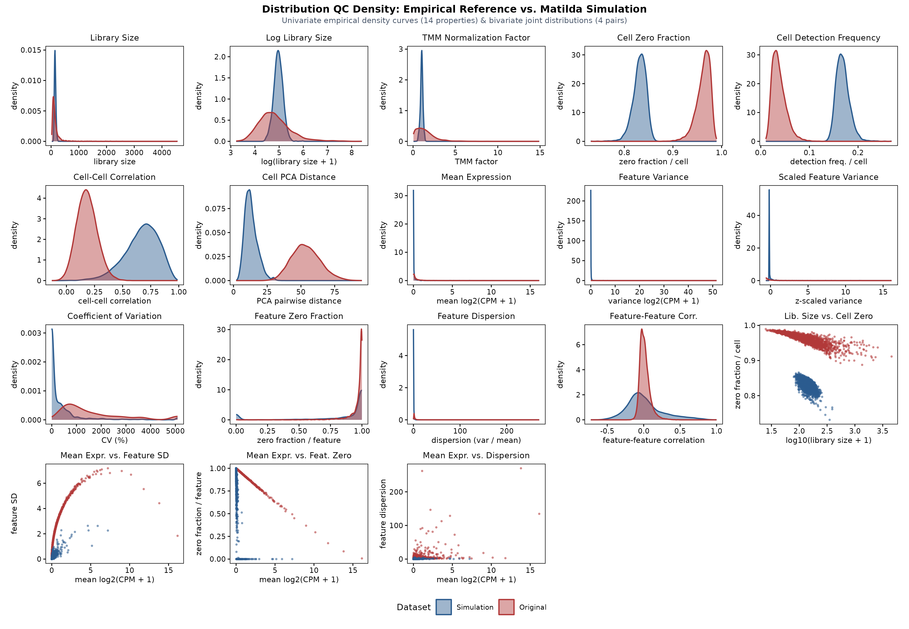
Figure 3B: Distribution QC Empirical and Joint Density Distributions (Matilda vs. Reference).
5.4 Metric Heatmap
Heatmap showing relative performance scores across simulators:
p_heatmap <- plot_metric_heatmap(final_benchmark_df, scale_fill = "relative", base_size = 10)
ggsave("figures/scSimEval_metric_heatmap.png", plot = p_heatmap, width = 15, height = 10, dpi = 300)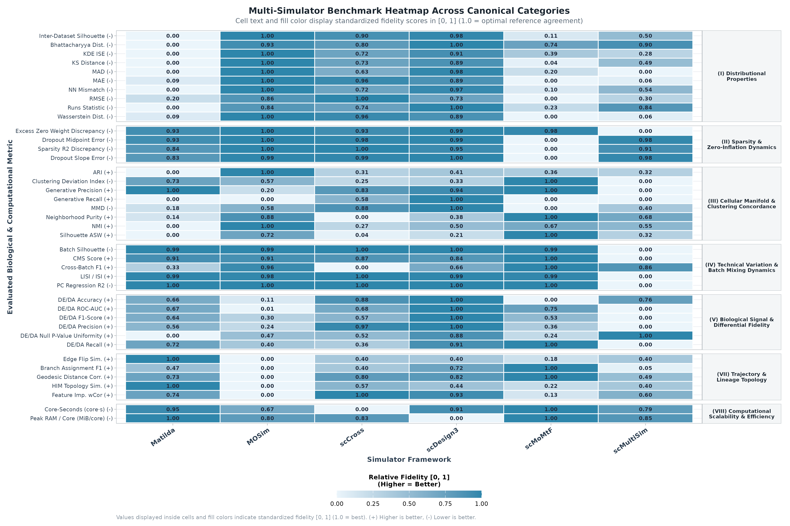
Figure 4: Relative Metric Heatmap Across Simulation Methods.
5.5 Metric Plots by Category Group
Detailed score breakdowns for each individual evaluation category:
cats <- unique(final_benchmark_df$Category)
for (cat_name in cats) {
p_cat <- plot_category_metric_bars(final_benchmark_df, category = cat_name, score_type = "normalized")
ggsave(paste0("figures/scSimEval_metric_bars_", gsub("[^A-Za-z0-9]", "_", cat_name), ".png"),
plot = p_cat, width = 12, height = 8, dpi = 300)
}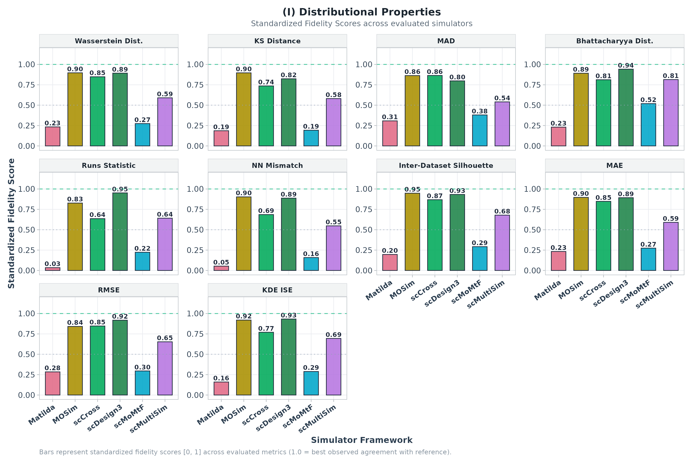
Figure 5A: Category I Distributional Properties Score Breakdown.
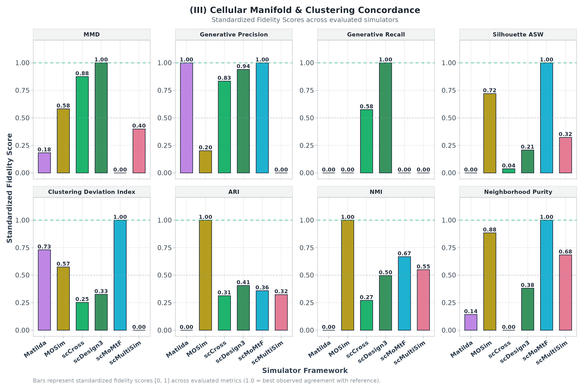
Figure 5B: Category III Cellular Manifold & Clustering Concordance Breakdown.
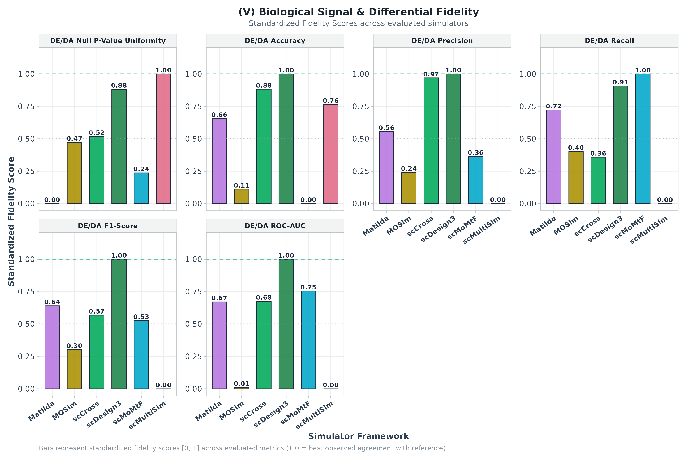
Figure 5C: Category V Biological Signal & Differential Expression Fidelity Breakdown.
5.6 PCA Ordination Plot
Joint principal component analysis projecting simulators and metric loadings, labeling the top 8 influential metrics:
p_pca <- plot_metric_pca(final_benchmark_df, panel = "both", top_n_loadings = 8, base_size = 11)
ggsave("figures/scSimEval_pca_ordination.png", plot = p_pca, width = 13, height = 6.5, dpi = 300)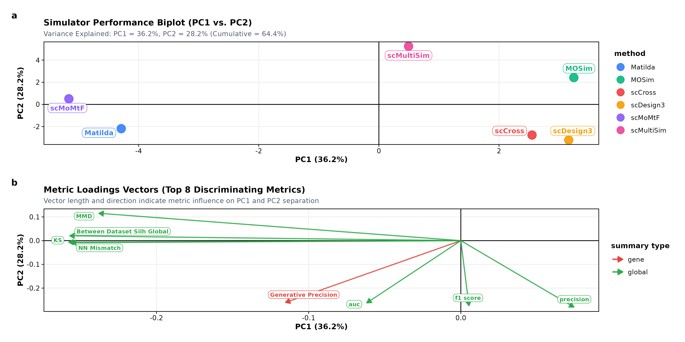
Figure 6: Principal Component Analysis (PCA) Ordination of Simulators and Metric Loadings.
5.7 Multidimensional Scaling (MDS) Metric Space
Multidimensional scaling displaying simulator clustering across metric summaries:
p_mds <- plot_metric_mds(final_benchmark_df, ordination_by = "summaries", normalize_scores = TRUE, base_size = 11)
ggsave("figures/scSimEval_mds_metric_space.png", plot = p_mds, width = 12, height = 7, dpi = 300)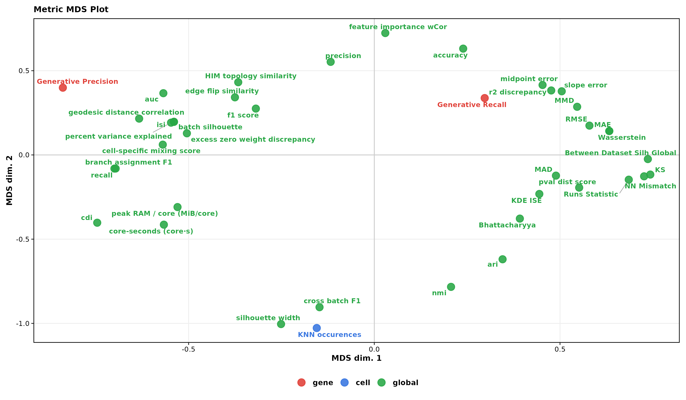
Figure 7: Multidimensional Scaling (MDS) Ordination across Metric Summaries.
5.8 UMAP Embeddings Grid Across Simulators
Unified UMAP projection comparing empirical reference cells with synthetic cells from each simulator, colored by cell type:
# Compute 2D UMAP coordinates
embedding_df <- compute_dataset_embeddings(
reference = ref_mat,
simulated = all_sim_counts,
reduction = "umap",
cell_types = c(list(Reference = ct_ref), all_sim_celltypes),
seed = 42
)
# Plot faceted UMAP grid
p_umap <- plot_dataset_embeddings(
embedding_data = embedding_df,
reduction = "umap",
layout = "facet",
color_by = "cell_type",
base_size = 11
)
ggsave("figures/scSimEval_umap_grid.png", plot = p_umap, width = 15, height = 10, dpi = 300)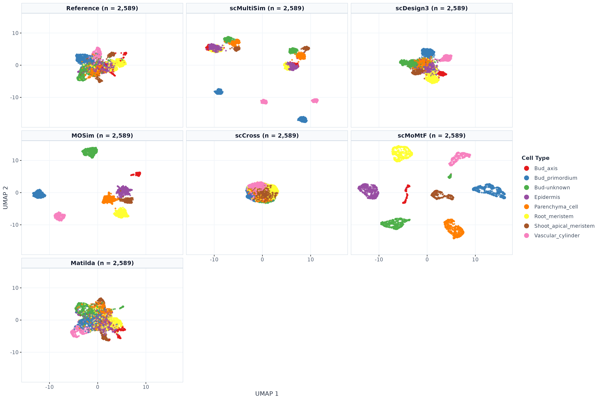
Figure 8: Faceted UMAP Embeddings Grid Colored by Annotated Cell Types (Reference vs. 6 Simulators).
5.9 Computational Scalability Benchmark (Combined 4-Panel)
Composite 4-panel evaluation displaying execution runtime (core-seconds), resident memory (MiB/core), throughput, and efficiency trade-offs:
p_scalability <- plot_scalability_benchmark(
benchmark_data = final_benchmark_df,
type = "composite",
layout = "4panel",
modality = "total",
time_unit = "core_seconds",
memory_unit = "MiB/core",
base_size = 11
)
ggsave("figures/scSimEval_scalability_benchmark.png", plot = p_scalability, width = 13, height = 8.5, dpi = 300)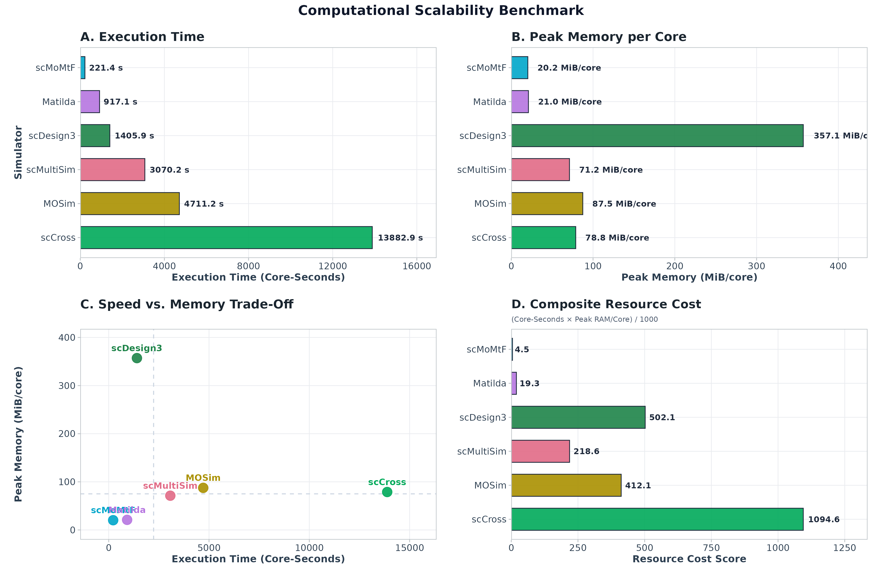
Figure 9: Composite 4-Panel Computational Scalability Benchmark.
6. Conclusion
This tutorial demonstrated the end-to-end benchmarking of 6
single-cell RNA simulation methods on rice bud tissue. Through
scSimEval, researchers can rigorously evaluate statistical
distributional fidelity, zero patterns, clustering integrity, batch
effects, differential expression conservation, trajectory topology, and
hardware scalability.
7. Session Information
sessionInfo()
#> R version 4.6.2 (2026-10-29)
#> Platform: x86_64-pc-linux-gnu
#> Running under: Ubuntu 24.04.5 LTS
#>
#> Matrix products: default
#> BLAS: /usr/lib/x86_64-linux-gnu/blas/libblas.so.3.12.0
#> LAPACK: /usr/lib/x86_64-linux-gnu/lapack/liblapack.so.3.12.0 LAPACK version 3.12.0
#>
#> locale:
#> [1] LC_CTYPE=en_US.UTF-8 LC_NUMERIC=C
#> [3] LC_TIME=en_US.UTF-8 LC_COLLATE=en_US.UTF-8
#> [5] LC_MONETARY=en_US.UTF-8 LC_MESSAGES=en_US.UTF-8
#> [7] LC_PAPER=en_US.UTF-8 LC_NAME=C
#> [9] LC_ADDRESS=C LC_TELEPHONE=C
#> [11] LC_MEASUREMENT=en_US.UTF-8 LC_IDENTIFICATION=C
#>
#> time zone: Asia/Kolkata
#> tzcode source: system (glibc)
#>
#> attached base packages:
#> [1] stats graphics grDevices utils datasets methods base
#>
#> loaded via a namespace (and not attached):
#> [1] digest_0.6.39 desc_1.4.3 R6_2.6.1 fastmap_1.2.0
#> [5] xfun_0.62 cachem_1.1.0 knitr_1.52 htmltools_0.5.9
#> [9] rmarkdown_2.32 lifecycle_1.0.5 cli_3.6.6 sass_0.4.10
#> [13] pkgdown_2.2.1 textshaping_1.0.5 jquerylib_0.1.4 systemfonts_1.3.3
#> [17] compiler_4.6.2 tools_4.6.2 ragg_1.5.2 bslib_0.12.0
#> [21] evaluate_1.0.5 yaml_2.3.12 otel_0.3.0 jsonlite_2.0.0
#> [25] rlang_1.3.0 fs_2.1.0 htmlwidgets_1.6.4